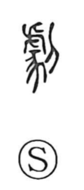

劇

Uncategorized
Kun: hageshii | On: geki
drama ・ play ・ intense ・ severe ・ violent
Explanation
Shirakawa understands 劇 as a compound of 慶 and the knife radical 刂. He takes 慶 to depict a performer wearing a tiger’s hide in a sham ritual, a figure adopted for ceremonial display. In ancient rites, a staged cutting of this costumed person symbolized the subduing of traitors and was performed before the gods and at altars as a prayer for victory. The vigorous, vehement movements of this rite gave the character its sense of “intense, severe, violent,” while the stylized acting and gestures later yielded the meaning “drama, play.” A related graph, 戲, likewise arose from ceremonies of praying for victory.